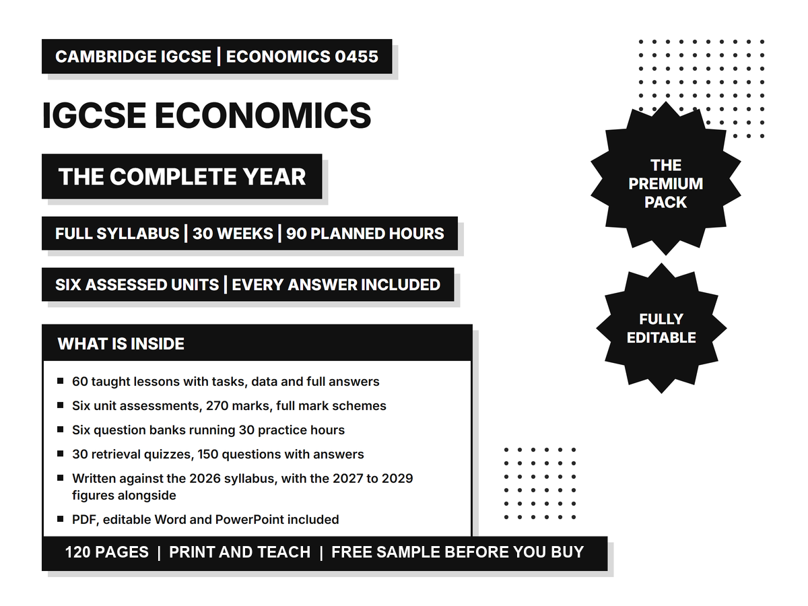

A full 30 week teaching year written for Cambridge IGCSE Economics 0455. Every lesson written out, every answer included, every unit assessed. Print it Monday, teach it all year.
This resource was corrected on 16 August 2026. If you downloaded it before then, take this copy instead. What changed, and every other correction we have made, is on the corrections page.

The sample is week 1 of the year, complete: both taught lessons with tasks and full answers, the practice hour extract, the week 1 retrieval quiz, the full year map, and the whole honest scope table. The other 29 weeks are built exactly like it.
Every economy, market and firm in the tasks is written for teaching, in the way exam board stimulus material is. That is deliberate: made for purpose data lets every question have a checkable answer and stops the pack going stale when a real statistic is revised. Before publication every stated numeric answer was recomputed independently from its own case data, and every elasticity value, curve shift, tax incidence split, exchange rate conversion and current account total was checked against the economic logic it claims.
| Unit | Weeks | Assessed by |
|---|---|---|
| 1. The basic economic problem | 1 to 4 | 40 marks, week 4 |
| 2. The allocation of resources | 5 to 11 | 50 marks, week 11 |
| 3. Microeconomic decision makers | 12 to 17 | 50 marks, week 17 |
| 4. Government and the macroeconomy | 18 to 24 | 50 marks, week 24 |
| 5. Economic development | 25 to 27 | 40 marks, week 27 |
| 6. International trade and globalisation | 28 to 30 | 40 marks, week 30 |
No past papers and no Cambridge mark schemes: those are Cambridge copyright and are available to centres from the School Support Hub, so reprinting them here would add cost and no value. No textbook chapters, and no video or online component. The levels ladder is this pack's own, written against the three assessment objectives. It is not a reproduction of a Cambridge mark scheme grid and it is not a prediction of one.
Is it really the whole year? Yes. 30 weeks at three timetabled hours a week, which is 90 planned hours: 60 written lessons plus 30 practice hours, six of which are the unit assessments. Nothing is left as an outline.
Can I change things? Everything. The Word file carries the entire year as ordinary Word text, so the economies, the figures and the sequence are all yours to edit.
We teach it over two years, does that work? Yes. Use this as the taught core in the first year and spend the second on depth, past paper technique and revision, which this pack does not attempt to replace.
What if it is not for me? Try the free sample first. It shows the format, the teaching approach and the level of detail before you pay. Because the full pack downloads instantly, change-of-mind refunds are not normally offered once the files have been accessed or downloaded. If you are charged twice, cannot access the files, or the pack is materially defective or does not match its description, contact support@thebusiness.school and we will put it right. This does not affect your statutory rights.
Who wrote it? Sakari Laajoki, TBS Education Ltd Oy. New packs land first in a small free group for teachers, and the link is at the bottom of this page.
One school licence. Licensed for use within the purchasing school: print it, edit it and share it with colleagues who teach the course in your centre. Not for resale or for publication outside your school.
Business Teachers Building a Live Classroom Simulation is a small free group where new packs land first. Free, and it stays free.